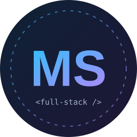
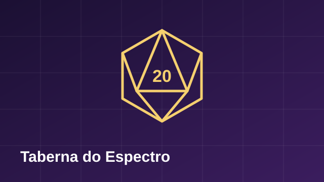
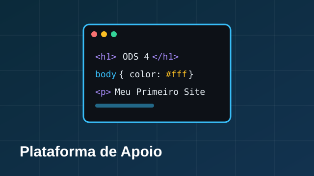
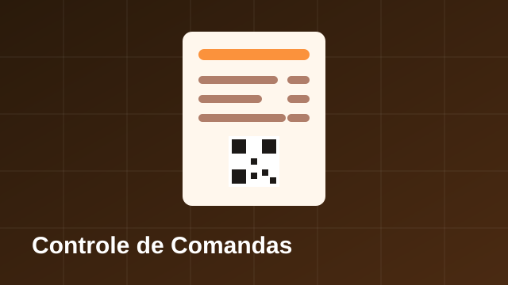
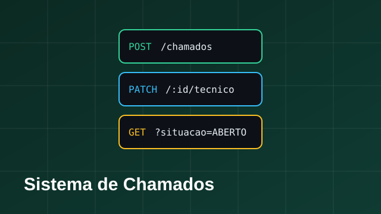
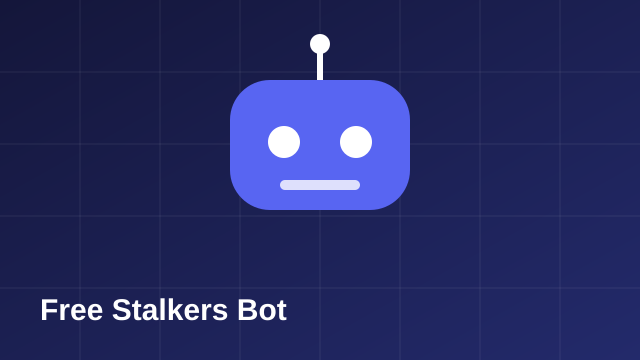
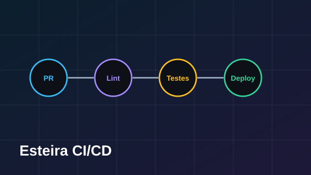

Olá, eu sou
Matheus Sá De Araujo Miranda
Desenvolvedor Full Stack em formação
Crio aplicações web completas com TypeScript, React, Next.js e Node.js, indo do banco de dados à interface, com testes automatizados e entrega contínua.

Sobre mim
Sou estudante de tecnologia no SENAI, em Minas Gerais, e gosto de transformar ideias em sistemas que funcionam de verdade. Desenvolvo APIs REST com Express e NestJS, modelo bancos relacionais em MySQL e PostgreSQL e construo interfaces responsivas com React e Next.js.
Já publiquei projetos na Vercel, integrei serviços como Supabase e Discord e escrevo testes com Vitest e Jest para manter as regras de negócio confiáveis. Hoje também cuido da esteira de entrega dos meus projetos com GitHub Actions, validando o código a cada Pull Request e publicando automaticamente.
Habilidades técnicas
Back-end
Banco de dados
Qualidade e DevOps
Projetos



Bar Yasmim · Controle de Comandas
Sistema de comandas para bar: a equipe autenticada controla mesas, itens e pagamentos, e o cliente acompanha a própria comanda por QR Code, sem login, podendo chamar o garçom ou pedir a conta.

Sistema de Chamados
API REST de chamados de suporte: cadastro de pessoas e tipos de problema, abertura de chamados com filtros por situação e prioridade, atribuição de técnico e comentários.

Free Stalkers Bot
Bot de Discord que funciona como sistema de tickets para relatórios de missão: cria um canal privado, conduz o relato passo a passo e envia o resumo por webhook autenticado.

Portfólio com Esteira CI/CD
Este site: cada Pull Request passa por linter de HTML em Node 18 e 20, limite de tamanho de arquivos, varredura de termos proibidos e checagem de links e imagens antes do deploy automático no GitHub Pages.
Vamos conversar?
Quer falar sobre um projeto ou uma oportunidade? Me chama no WhatsApp.
(32) 99959-7280